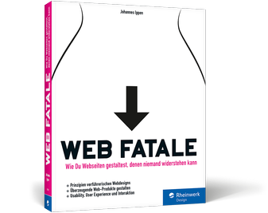
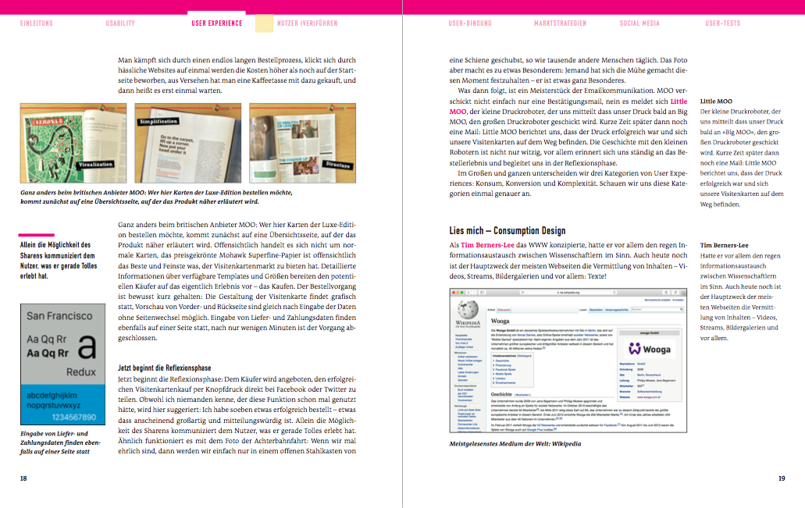

Sie wollen aus der Flut der Online-Angebote herausstechen? Dann sollten Sie Ihre Nutzer verführen! Sie brauchen das »je ne sais quoi«, das aus einer »schönen« Website eine zum Verlieben macht. Gewitzt und unvergleichlich originell zeigt Ihnen dieses Buch, wie Sie diese anspruchsvolle Design-Aufgabe lösen und Web-Produkte gestalten, die Nutzer auf allen Ebenen überzeugen. Lernen Sie, wie Sie die Usability Ihrer Website perfektionieren und den Website-Besuch zu einem rundum gelungenen Erlebnis gestalten. – Für Websites, die jeder besuchen und niemand verlassen will!
- Prinzipien und Grundlagen verführerischen Webdesigns
- Web-Produkte gestalten, die auf ganzer Linie überzeugen
- Usability, User Experience und Interaktion
Inhalt

- Usability
Ein Auftritt mit Klasse – von Mäusen, Fenstern, Metaphern und Missverständnissen.
- User Experience
Das Spiel mit den Reizen: Wie du Erlebnisse erschaffst und mit Gamification punktest.
- Nutzer (ver)führen
Prinzipien und Grundlagen verführerischen Webdesigns, von IKEA bis über Miller’s Law bis hin zu Onboarding.
- Nutzerbindung
Um Kopf und Kragen: Personas, Positive Verstärkung und die richtige Contentstrategie machen aus Nutzern Fans.
- Marktstrategien
Hinreißende Absätze: Den richtigen Ton treffen, Social Proof, Pricing, Retargetting und Content-Marketing erklärt.
- Social Media
Lass uns Freunde bleiben – der Nutzer als soziales Wesen, von den besten Marken lernen.
- User Testing
Bitte keine Stereotypen – der Nutzer im Fokus. Usability-Tests, A/B-Tests und Tracking.
- 330 Seiten
- Bildbuchformat 19 x 24 cm
- Rheinwerk Design; Auflage: 1 (28. März 2016)
- ISBN 978-3-8362-3898-4
- Autor: Johannes Ippen
Autor
Johannes Ippen ist Designer und Autor aus Berlin. Mit seinem Team ist er für das Produktmarketing beim Indie-Spieleentwickler Wooga verantwortlich.